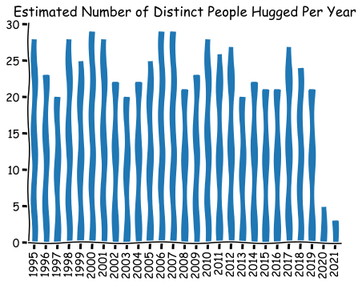

Typically, what I want to do when I create a blog post is to combine text, code, and code output, and then push it to the github repo that hosts my website. But what are the options, and which of them is the best (at least for my purposes)?
The objective is to take a mixture of markdown and code, execute the code, and ensure the outputs from that code (eg images) are linked to in a ‘final’ version of the markdown (let’s call it an executed version) that can easily be uploaded to github pages via a static site generator.
I’ll look at three ways to do this: Jupyter Notebooks, Codebraid, and Rmarkdown.
Let’s take a very simple blog post as the test case, with the quality of the output and success on the following tasks our metric of success:
write and execute some code
write some text
execute some code that produces an image and includes it using the markdown ! [] (dir/to/img.png) syntax; and
execute some code in-line with text.
Here’s the contents that we’ll run in each case before exporting to executed markdown (note that it won’t show any outputs because it hasn’t been executed-in fact this will be, somewhat ironically, a code-output free blog post!):
Test blog post
This is a very approximate recreation of XKCD comic number 2419, Hug Count.
Now we need to adjust the last entry downwards to reflect the unfortunate lack of hugs since coronavirus:
df.loc[2020:2022, 'Hugs'] = [5, 3]
Let’s print the last number in-line: 3.
Finally, let’s create the image.
import matplotlib.pyplot as pltimport matplotlib_inline.backend_inlinematplotlib_inline.backend_inline.set_matplotlib_formats("svg")with plt.xkcd(): fig, ax = plt.subplots() ax.spines['right'].set_color('none') ax.spines['top'].set_color('none') df.plot.bar(ax=ax) ax.get_legend().remove() ax.set_title('Estimated Number of Distinct People Hugged Per Year')

Hugs chart, after XKCD
The three ways
Jupyter Notebooks
From a Jupyter Notebook server running the .ipynb in a browser window (launch with jupyter notebook in the command line), choose File->Download As->Markdown to get a zip file that contains an executed markdown with outputs and a separate image file that is linked to from the markdown file. The automatic inclusion of images works really well. One major drawback of this approach is that there is no way to execute in-line code.
Although it has been requested as a feature, there’s no way to go from .ipynb to executed markdown in VS Code (though VS Code is a great Jupyter Notebook IDE in many other ways). This is a shame as VS Code is my go-to IDE.
Pros:
Images auto-linked
Lots of great extensions for Jupyter notebooks
Shows how the final outputs will look (because you can execute as you go)
Cons:
Doesn’t play that nicely with version control
Cannot integrate code and text; blocks must be one or another
Requires an IDE that can read .ipynb files
Codebraid
Codebraid is a really great package with a smorgasbord of features such as in-line code execution within paragraphs, no requirement for markdown preprocessor commands, minimal diffs for easy version control, the ability to insert code output anywhere in a document, and the ability to use multiple languages (and even multiple sessions) within a single document. All very impressive.
Like knitr for rmarkdown, it makes use of the excellent pandoc under the hood. To call it, you use
on the command line. To get an executable Python block, the syntax for just getting the output of the code is
```{.python .cb.run}x ='Hello from *Python!*'print(x)```
whereas to get the code and the output it’s
```{.python .cb.nb}x ='Hello from *Python!*'print(x)```
Additional options are available via the show argument, eg {.python .cb.nb} show=code+stdout:raw+stderr, shows the code, the raw output, and any errors.
Displaying in-line code or output is possible. Use in-line code with .cb.run, e.g.
`print(1 + 2)`{{.python .cb.run}}
Running in-line code with .cb.expr evaluates an expression and then inserts the raw output into the document, where it is interpreted as Markdown. Inline code with .cb.nb (nb is short for notebook) is similar, except output is shown verbatim.
Images can be included automatically, just as is the case with Jupyter Notebook export, except that you must specify that you want to use a jupyter kernel rather than a pure language kernel. {.python .cb.nb jupyter_kernel=python3} is what you’d run in the first code block, but you can use {.python .cb.nb} in subsequent blocks (whether in-line or not).
Apart from all that, the only other thing you need to do is add a title, e.g.
---
title: "Codebraid blog post example"
---
Codebraid works really, really well with a jupyter kernel. The figures are included automatically, in-line rendering is possible, and you have a lot of options on output. Its creator has clearly but a lot of work into it. The only real downside is that you cannot see the outputs except in the executed and exported markdown, unlike in a Jupyter Notebook. I dare say that a clever VS Code extension could create a live preview, which would be fantastic to see.
Pros:
First class cross-language support
In-line code execution
Great with version control
Works with any text editor
Lots of control over outputs
Images auto-linked
Uses a plain markdown .md file
Cons:
Doesn’t show how the final outputs will look
In some cases, exported markdown files may contains less common markdown syntax features, such as triple colons, that may not be rendered by all markdown viewers (it may be possible to turn these off)
Rmarkdown
The way Rmarkdown (a file format that’s a fancy version of markdown), RStudio, and the package knitr work together is so great that I’m surprised it hasn’t caught on more. When it works, it really is brilliant.
Part of the reason why it hasn’t is probably because it’s pretty tightly bound with just one language (R), unlike Ju(lia)py(thon)(te)R notebooks, which covers three, and Codebraid, which covers those three plus Rust, Javascript, and bash. That, and you’re strongly tied to both R and RStudio to get the magic preview of what the output will look like. That’s not to say you cannot run Python or Julia in rmarkdown documents; you can, but they’re not first class citizens and I’ve heard stories about both big slowdowns relative to using those languages natively and that some things just don’t work at all. That said, for writing a blog post with a few lines of Python or Julia in, rmarkdown is a viable option, and it’s a really strong option for R.
Like Codebraid, rmarkdown + knitr use pandoc to achieve their magic, though pandoc’s role is a bit more hidden (it doesn’t appear in the command; in fact, you click a button that says knitr or Preview). When you create a new rmarkdown document in RStudio, you get options for output in HTML, PDF, or Word. But, of course, we know that pandoc is involved-and so that there are many more output formats available! In this case, we want to get an executed markdown script. The way to get this to happen is to adapt the header at the top of a newly created rmarkdown document to have output set to md_document as follows
---
title: "your title"
output: md_document
---
I wasn’t able to get the preview of Python chunks working–the in-document code-chunk preview button said that pandas was not installed (as if!). However, the output did work when I used the export to markdown option (the button to do this is, confusingly, labelled Preview but it’s the Preview that appears on the bar at the top of the document rather than within the document). Furthermore, the in-line code chunks do not seem to work with anything other than R.
Pros:
Fantastic preview of how the final outputs will look when using RStudio
Great with version control
Almost uses a plain markdown file (it looks like plain markdown, but the extension is .rmd)
Excellent if you’re using R
Images auto-linked (although through HTML rather than markdown)
Cons:
Most of the best features do not work with other languages: eg preview and in-line code
Not so easy to use outside of RStudio
Markdown export hidden
Python support only through R’s reticulate package, which seems slow and is fiddly to connect to virtual environments
Conclusion
Jupyter Notebooks are great if you don’t mind the well-known fussyness around version control and the cumbersome file format. The preview of output that you naturally get by running cells is perhaps the strongest feature. Plus, you get lots of other great features of Jupyter Notebooks, including the many possible extensions, and a choice of several IDEs, including Visual Studio Code and JupyterLab. No in-line code, however.
Rmarkdown + knitr + RStudio works well for R (with a bit of fiddling to get markdown out instead of, say, html) but it’s just not good enough for other languages yet and it’s very much tied into the RStudio ecosystem. The best feature is the live preview as you execute individual chunks-but again, that’s only for R.
Codebraid is, for me, the stand out tool. It does everything you could ever want across every language you could ever want with ease except for one very important feature that’s missing: the ability to see a live preview. This isn’t really a failing of the Codebraid library of course; in the case of the other two, we’re really combining a file format with a file viewer whereas Codebraid is just the file format and a command line tool. So, if, say, Visual Studio Code introduced a live preview of Codebraid markdown (before execution), then it would be superior to the other options for all purposes in my view. As it is, it’s still the best all rounder and, for most blog posts that I do, I can see myself using either Codebraid or Jupyter Notebooks. It has an edge on the latter when it comes to in-line code, multiple languages simultaneously, and a less fussy file format (it’s just markdown rather than JSON).
Verbatim blog post file contents
These are in case you want to try this out for yourself.
Jupyter Notebook
{
"cells": [
{
"cell_type": "markdown",
"metadata": {},
"source": [
"This is a *very* approximate recreation of XKCD comic number 2419, [Hug Count](https://xkcd.com/2419/)."
]
},
{
"cell_type": "code",
"execution_count": null,
"metadata": {},
"outputs": [],
"source": [
"import numpy as np\n",
"import pandas as pd\n",
"\n",
"from numpy.random import Generator, PCG64\n",
"seed_for_prng = 78557\n",
"prng = Generator(PCG64(seed_for_prng))\n",
"\n",
"\n",
"df = pd.DataFrame(prng.integers(20, 30, size=(2022-1995, 1)),\n",
" columns=['Hugs'],\n",
" index=range(1995, 2022))\n",
"df.tail()"
]
},
{
"cell_type": "markdown",
"metadata": {},
"source": [
"Now we need to adjust the last entry downwards to reflect the unfortunate lack of hugs since coronavirus:"
]
},
{
"cell_type": "code",
"execution_count": null,
"metadata": {},
"outputs": [],
"source": [
"df.loc[2020:2022, 'Hugs'] = [5, 3]"
]
},
{
"cell_type": "markdown",
"metadata": {},
"source": [
"Let's print the last number in-line (cannot do this in Jupyter Notebook).\n",
"\n",
"Finally, let's create the image."
]
},
{
"cell_type": "code",
"execution_count": null,
"metadata": {},
"outputs": [],
"source": [
"import matplotlib.pyplot as plt\n",
"\n",
"with plt.xkcd():\n",
" fig, ax = plt.subplots()\n",
" ax.spines['right'].set_color('none')\n",
" ax.spines['top'].set_color('none')\n",
" df.plot.bar(ax=ax)\n",
" ax.get_legend().remove()\n",
" ax.set_title('Estimated Number of Distinct People Hugged Per Year')"
]
},
{
"cell_type": "code",
"execution_count": null,
"metadata": {},
"outputs": [],
"source": []
}
],
"metadata": {
"kernelspec": {
"display_name": "Python 3.7.6 64-bit ('base': conda)",
"language": "python",
"name": "python37664bitbaseconda6d7b358218c047dcab3fb2cff66062fa"
},
"language_info": {
"codemirror_mode": {
"name": "ipython",
"version": 3
},
"file_extension": ".py",
"mimetype": "text/x-python",
"name": "python",
"nbconvert_exporter": "python",
"pygments_lexer": "ipython3",
"version": "3.7.6"
}
},
"nbformat": 4,
"nbformat_minor": 4
}
This can be executed by pressing ‘run’ in an IDE. In the Jupyter Notebook IDE, you should then use the export to markdown option (under file->download as).
Codebraid
---title: "Codebraid blog post example"---This is a *very* approximate recreation of XKCD comic number 2419, [Hug Count](https://xkcd.com/2419/).```{.python .cb.nb jupyter_kernel=python3}import numpy as npimport pandas as pdfrom numpy.random import Generator, PCG64seed_for_prng =78557prng = Generator(PCG64(seed_for_prng))df = pd.DataFrame(prng.integers(20, 30, size=(2022-1995, 1)), columns=['Hugs'], index=range(1995, 2022))df.tail()```Now we need to adjust the last entry downwards to reflect the unfortunate lack of hugs since coronavirus:```{python .cb.nb}df.loc[2020:2022, 'Hugs'] = [5, 3]```Let's print the last number in-line `print(df.iloc[-1, -1])`{.python .cb.run}.Finally, let's create the image.```{.python .cb.nb}import matplotlib.pyplot as pltwith plt.xkcd(): fig, ax = plt.subplots() ax.spines['right'].set_color('none') ax.spines['top'].set_color('none') df.plot.bar(ax=ax) ax.get_legend().remove() ax.set_title('Estimated Number of Distinct People Hugged Per Year')```
Then run codebraid pandoc -s in.md -o out.md on the command line, assuming you have codebraid and pandoc installed, and that you name the above file ‘in.md’.
Rmarkdown
---title: "three_rmd"output: md_document---```{r setup, include=FALSE}knitr::opts_chunk$set(echo =TRUE)library(reticulate)```This is a *very* approximate recreation of XKCD comic number 2419, [Hug Count](https://xkcd.com/2419/).```{python}import numpy as npimport pandas as pdfrom numpy.random import Generator, PCG64seed_for_prng =78557prng = Generator(PCG64(seed_for_prng))df = pd.DataFrame(prng.integers(20, 30, size=(2022-1995, 1)), columns=['Hugs'], index=range(1995, 2022))print(df.tail())```Now we need to adjust the last entry downwards to reflect the unfortunate lack of hugs since coronavirus:```{python}df.loc[2020:2022, 'Hugs'] = [5, 3]```Let's print the last number in-line (not possible with Rmarkdown).Finally, let's create the image.```{python}import matplotlib.pyplot as pltwith plt.xkcd(): fig, ax = plt.subplots() ax.spines['right'].set_color('none') ax.spines['top'].set_color('none') df.plot.bar(ax=ax) ax.get_legend().remove() ax.set_title('Estimated Number of Distinct People Hugged Per Year')```
In RStudio, changing output: html to output: md_document tells knitr to use markdown. Then hit the preview button at the top of the document, which actually creates an output markdown file.